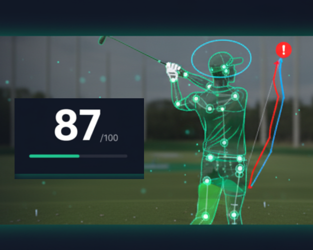

The Golf Code:
AI, 골프의 '감(感)'을 '코드'로 바꾸다
KPGA 프로가 직접 개발한 데이터 기반 스윙 분석 및 코칭 플랫폼
조민서
- 소속: 용인대학교 골프학과 / KPGA 프로
- 채널: 크리에이터 '도전골퍼 조민서'
- 수상: LG U+ & YouTube '유쓰 쇼츠 페스티벌' 대상
"왜 우리는 매일 연습해도
제자리걸음일까요?"
KPGA 프로로서 느낀 한계
- 투어 성적의 벽, 끊임없는 스윙 교정의 어려움
- "내 스윙의 문제를 '감'이 아닌 객관적인 데이터로 보고 싶다!"
아마추어 골퍼의 현실
- 정보 비대칭: 고가의 레슨 없이는 정확한 피드백 부재
- 잘못된 연습: 감에 의존 → 잘못된 습관 고착화 → 실력 정체, 흥미 저하
.png)
Solution: 당신의 스윙 코드를 해독하다
'The Golf Code' (v0.1) - 영상만 올리면, AI가 당신의 스윙 데이터를 시각적으로 분석해 드립니다.
AI 자동 분석
MediaPipe 기반 자세 추정을 통해 스윙의 모든 관절을 정밀하게 트래킹합니다.
핵심 문제 시각화
머리 움직임(원), 손 궤적(곡선), 스윙 플레인(선) 등 핵심 문제를 직관적으로 보여줍니다.

자세 안정성 점수 & 개선 방향
AI가 분석한 당신의 스윙 안정성을 점수로 보여드립니다.
데이터 리포트
스윙의 일관성과 안정성을 데이터로 정량화하여 리포트를 제공합니다.
0/100

손 높이 그래프 (Backswing vs Downswing)
From Scratch:
골프 프로, 코드를 배우다
"필드의 문제를 해결하기 위해, 직접 기술을 연마했습니다."
사용한 핵심 기술:
개발 과정 하이라이트:
-
✔
아이디어 구체화: KPGA 프로 경험 기반 핵심 분석 지표 정의
-
✔
기술 학습 & 구현: 비전공자로서 Python, AI 라이브러리 학습 및 프로토타입 개발
-
✔
문제 해결 & 개선: 화면 떨림 버그(v15) 해결, 사용자 피드백 기반 시각화 개선(v17) → 실행력 증명
Why 'The Golf Code'? 우리의 차별점
"우리는 단순 분석기가 아닌, 당신의 잠재력을 코드로 풀어내는 성장 파트너입니다."
분석 주체
기존 솔루션 (레슨, 앱)
코치의 주관적 판단 / AI의 '결과' 통보
The Golf Code
KPGA 프로의 통찰력 + AI의 객관적 데이터
피드백 방식
기존 솔루션 (레슨, 앱)
말 또는 단순 텍스트
The Golf Code
데이터 기반 시각화 ('왜'인지 증명)
핵심 가치
기존 솔루션 (레슨, 앱)
단발성 레슨 / 범용 분석 기능
The Golf Code
지속 가능한 '성장 경험' 설계 (개인화, 게임화)
From MVP to Platform: 우리의 성장 로드맵
단기 검증을 거쳐, 골퍼를 위한 필수 성장 플랫폼으로 나아갑니다.
시장 검증 계획 (단기: ~3개월)
10명 심층 인터뷰
핵심 가치 및 지불 의향(WTP) 검증 (NPS, 가짜 문 테스트 전환율 목표 설정)
'가짜 문' 테스트 실행
핵심 유료 기능에 대한 시장 수요(관심도)를 정량적 데이터(전환율 %)로 측정)
사용 데이터 초기 분석
실제 사용 패턴을 파악하고, 어떤 문제점을 가진 사용자들이 우리 앱을 주로 사용하는지 초기 사용자 페르소나 정의)
성장 로드맵
MVP (~6개월)
'자세 안정성 분석' MVP 고도화 (웹), 초기 사용자 확보
V2 (~1년)
핵심 팀 빌딩 (앱 개발자, 디자이너), Firebase 기반 정식 앱 런칭, '성장 기록 & 게임화' 도입
V3 (1년~)
자체 딥러닝 모델 개발 (스윙 DNA, 클럽 패스 추정 등), O2O 코치 매칭 플랫폼 확장
함께 'The Golf Code'를 완성할
조력자를 찾습니다
"기술적 깊이를 더하고, 지속 가능한 성장을 위한 발판을 마련하고 싶습니다."
시스템 실행 가속화
확장형 API 아키텍처 설계 검토 및 Backend/DL 엔지니어의 팀 합류 요청
AI기술 검증
AI의 기술적/학술적 정확도 검증 및 고도화를 위한 Visual AI 연구 파트너십 모색
성장 네트워크 연계
창업 지원 프로그램 연계 및 핵심 인력(Mobile App Developer 등) 네트워킹